CS 180 · Project 2
Fun with Filters and Frequencies!
All images can be clicked on to view them in full resolution
Overview
This project explores the idea of convolution, filters, and frequencies in order to modify images either by changing individual image properties or combining multiple images in interesting ways!
Part 1.1: Convolutions from Scratch
def four_loop_convolve(img, filter): start_time = time.perf_counter() img_h, img_w = img.shape fh, fw = filter.shape # flip the filter filter = np.flip(filter) # full padding of the image padded_img = np.zeros((img_h + 2 * (fh - 1), img_w + 2 * (fw - 1))) # fill in the padded image with the og image padded_img[fh-1:fh-1+img_h, fw-1:fw-1+img_w] = img # define the empty output image out_img = np.zeros((img_h + fh - 1, img_w + fw - 1)) for i in range(out_img.shape[0]): for j in range(out_img.shape[1]): for fi in range(filter.shape[0]): for fj in range(filter.shape[1]): out_img[i, j] += filter[fi, fj] * padded_img[i + fi, j + fj] end_time = time.perf_counter() print(f"Took {end_time - start_time:.6f} seconds") top = (fh - 1) // 2 left = (fw - 1) // 2 out_img = out_img[top:top + img_h, left:left + img_w] return out_imgdef two_loop_convolve(img, filter): start_time = time.perf_counter() img_h, img_w = img.shape fh, fw = filter.shape filter = np.flip(filter) padded_img = np.zeros((img_h + 2 * (fh - 1), img_w + 2 * (fw - 1))) padded_img[fh-1:fh-1+img_h, fw-1:fw-1+img_w] = img out_img = np.zeros((img_h + fh - 1, img_w + fw - 1)) for i in range(out_img.shape[0]): for j in range(out_img.shape[1]): # vectorized version of inner loop of four loop convolution out_img[i, j] = np.sum(filter * padded_img[i:i + fh, j:j + fw]) end_time = time.perf_counter() print(f"Took {end_time - start_time:.6f} seconds") top = (fh - 1) // 2 left = (fw - 1) // 2 out_img = out_img[top:top + img_h, left:left + img_w] return out_img
scipy
2 loops
4 loops
Box 9×9
 Dx
Dx

 Dy
Dy


Runtime
| Filter | scipy (s) | 2 loops (s) | 4 loops (s) | 4 loops / scipy | Matches scipy |
|---|---|---|---|---|---|
| Box | 0.2314 | 4.7927 | 44.1835 | 191× | Yes |
| 0.0160 | 4.6766 | 2.0732 | 130× | Yes | |
| 0.0277 | 4.6577 | 2.3318 | 84× | Yes |
grayscale selfie.
Typically, the two-loop implementation would be faster than the four-loop implementation, and we can see that in the box filter case, but in the case of the difference filters it is actually faster to do the directly implemented Python operations compared to the extra time it takes in order to vectorize and process the data into numpy's backend. The scipy implementation is significantly faster than either implementation. Additionally, we can check each output against the scipy convolution to ensure that the outputs are correct.
Boundary handling
The boundary conditions depend on the type of convolution. For full convolution, I take the filter size and then add columns of zeros on the left and right side of the image, respectively, and then I add rows of zeros to the top and bottom of the image, respectively. The final dimension of the input image is . The output is size . If the mode is same, we just perform the full convolution and then slice the extra padding off the sides to produce something that matches the size of the input.
Part 1.2: Finite Difference Operator
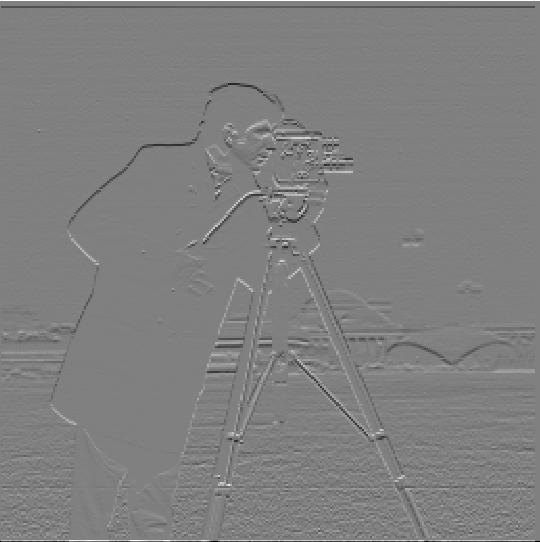
Threshold 0.28
Choosing a threshold

I chose 0.28 because I found that it preserved most of the key edges of the image while also getting rid of the noise. Going further in either direction either reintroduced noise or removed edges in a way that I found to degrade the image, so I chose 0.28 as the optimal threshold.
Part 1.3: Derivative of Gaussian (DoG) Filter
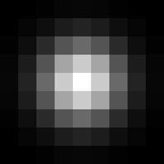
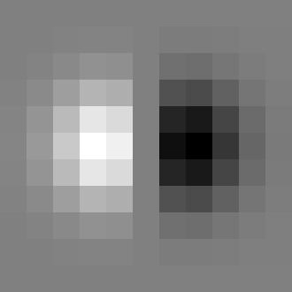
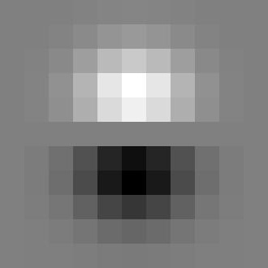
1.5
Blur, then differentiate vs. one DoG convolution
Blurred
Gradient magnitude
Binarized
Two steps
DoG
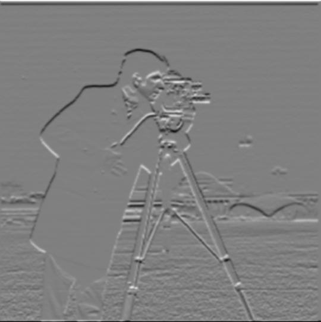
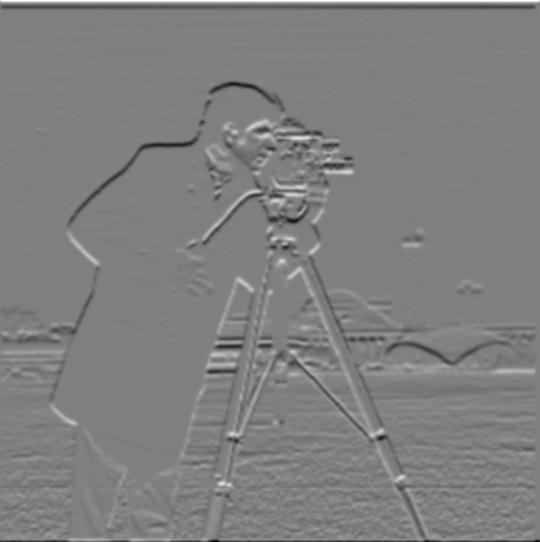
Threshold 0.1
After blurring, the amount of noise in the resulting gradient drops significantly, which in turn results in a lower threshold still being able to filter out noise. A lower threshold also means that you can better preserve edges, so overall the results are much better.
Blur and threshold
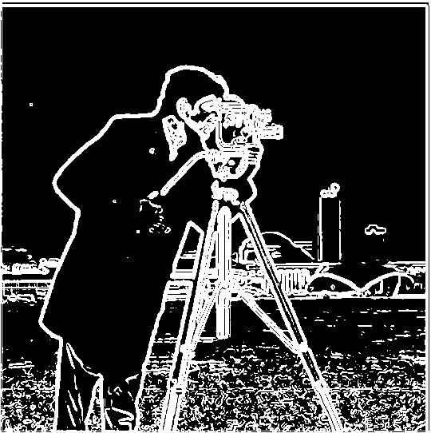


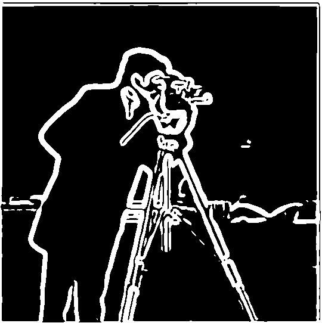
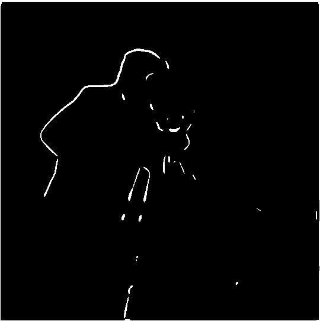
Blurred
Gradient
σ = 0.5
σ = 1
σ = 1.5
σ = 2
σ = 3
I tested different parameters for the Gaussian kernel and thresholding and found that a kernel with sigma parameter 1.5 and a threshold of 0.1 produced qualitatively good results. You can get similar results using a sigma value of 2 and a threshold of 0.08 as well.
For the rest of the project, I used a custom convolve_color function that separates an image into its component channels, performs the same convolution on each channel, and then stacks them back up along the channel dimension to produce an RGB output. For the sake of speed, I also used SciPy’s FFT-based convolution (scipy.signal.fftconvolve), which is significantly faster than scipy.signal.convolve2d for the convolution operations I needed.
def convolve_color(img, filter, convolve): # convolve each channel separately channels = [convolve(img[:, :, c], filter) for c in range(img.shape[2])] return np.stack(channels, axis=2)Part 2.1: Image “Sharpening”
The center peak on the right is not to scale.
Unsharp masking essentially works to boost the high frequencies in the image. Conceptually, we take an image, convolve it with a Gaussian to obtain the low frequencies, which we can then subtract from the original image to obtain the high frequencies. We then take those high frequencies and boost them by multiplying by some parameter. We can then add this boosted high-frequency image back to the original to get an ending result that appears sharper. Practically, this operation can be condensed into one filter that we can convolve with our source image by using the unit impulse . The filter is defined as , which, if expanded when doing convolution, results in an operation exactly equivalent to what was described above.
Taj Mahal
Oakland
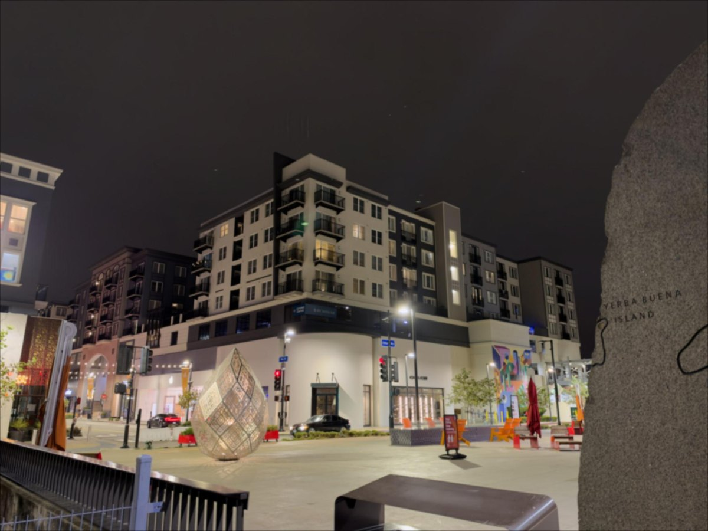
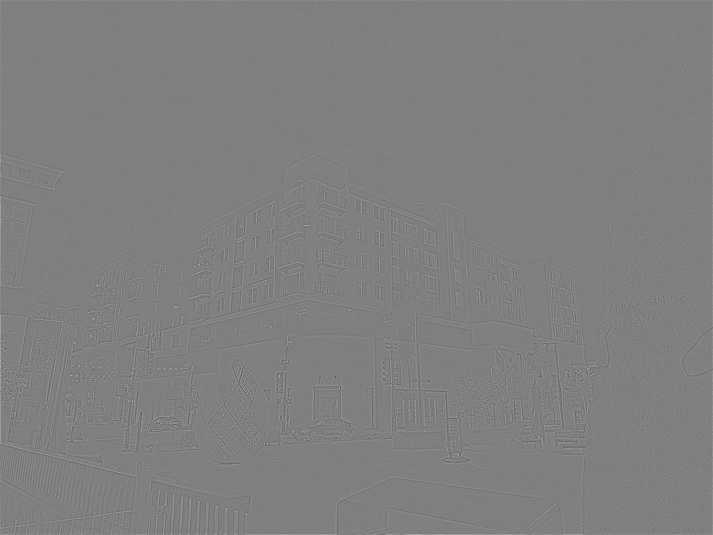
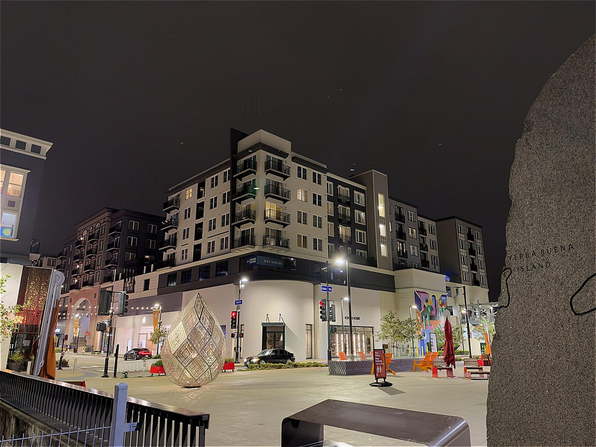
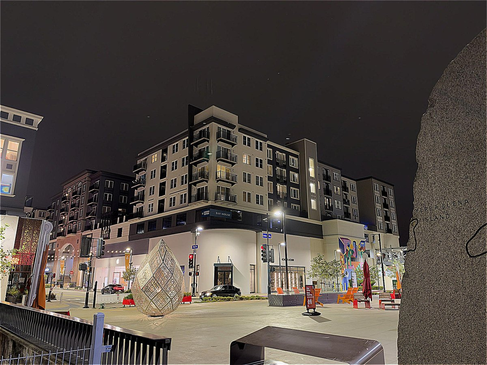
Reversing a blur with the unsharp filter
The unsharp masking process doesn’t actually introduce or recover any information; it just pushes pixels away from the average of their neighbors. In low-frequency areas this doesn’t really change anything, but in high-frequency areas it can make details such as edges, textures, and noise more prominent. In the Taj Mahal photograph, the bricks, scaffolding, and outline become much more defined as we boost . In the Oakland scene, one noticeable detail is the grain of the rock on the right side. With more and more sharpening, it looks like more aggressive noise. This image is also interesting because there are many straight-line edges that get noticeably more defined as you increase . Finally, if we apply a destructive blur to the Oakland image and then sharpen it, we can get a result that is visually close to the original, albeit with some blurring.
Part 2.2: Hybrid Images
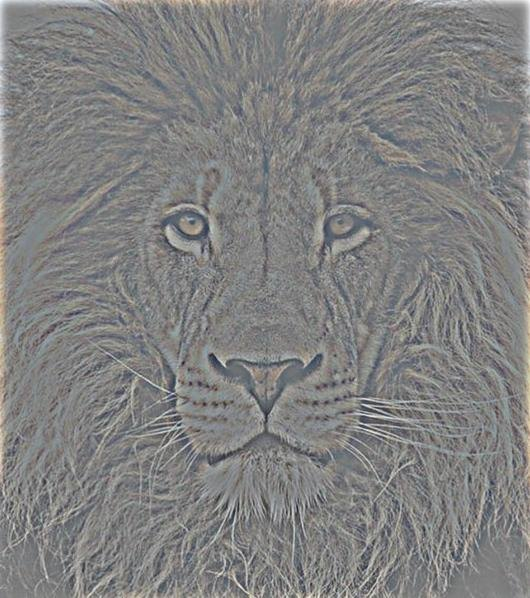
This section explores an effect where a viewer sees one image up close and a different one from far away. The core mechanism behind this effect is that high and low frequencies are perceived differently at different viewing distances. If we filter one of our two component images with a low-pass filter and the other with a high-pass filter (the original image minus its low-pass version) and then combine them, we get exactly that result. At close range the high-pass details become apparent, but at greater distances those frequencies seem to disappear and only the low-pass image remains visible.
Should hybrid images be in color?
When choosing which components of the hybrid should have color, the first significant factor to consider is that humans are inherently not that sensitive to high frequencies in color compared with grayscale. This becomes apparent when comparing pairs of images that differ only in whether the high-pass component is colored: “Both gray” and “Color high-pass” are almost indistinguishable, as are “Color low-pass” and “Both color.” In that sense, the key distinction is whether or not the low-pass image should be colored. I personally believe that adding color to the low-pass image can be quite beneficial, especially if the images are well aligned in terms of color, as can be seen in the Day + Night and Sunflower + Lion hybrids. One caveat is that when color is used for the low-pass image, it can dominate the high-pass image even at close range, so it can sometimes be beneficial to keep the low-pass image grayscale to preserve the effect of the hybrid.
Derek + Nutmeg
low-pass (Derek) 10 high-pass (Nutmeg) 3
Process
Derek (aligned)
Nutmeg (aligned)
Low-pass (Derek)
High-pass (Nutmeg)
Hybrid
Image
log |FFT|
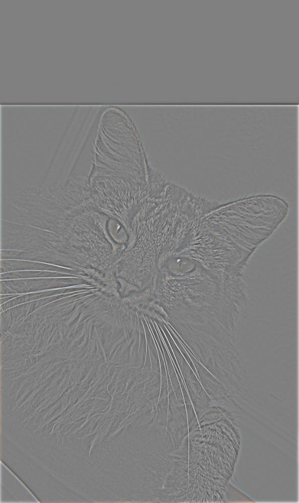
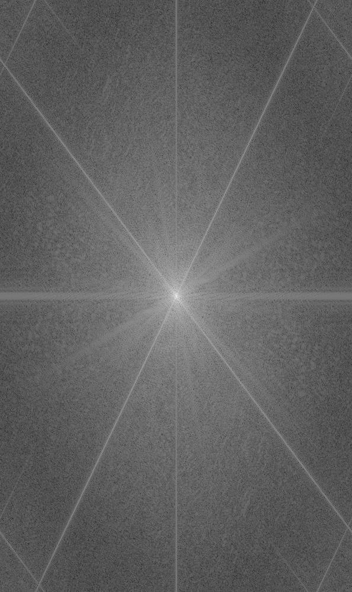
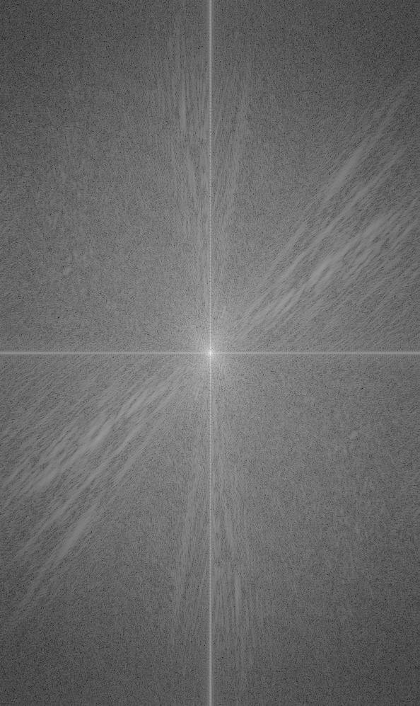
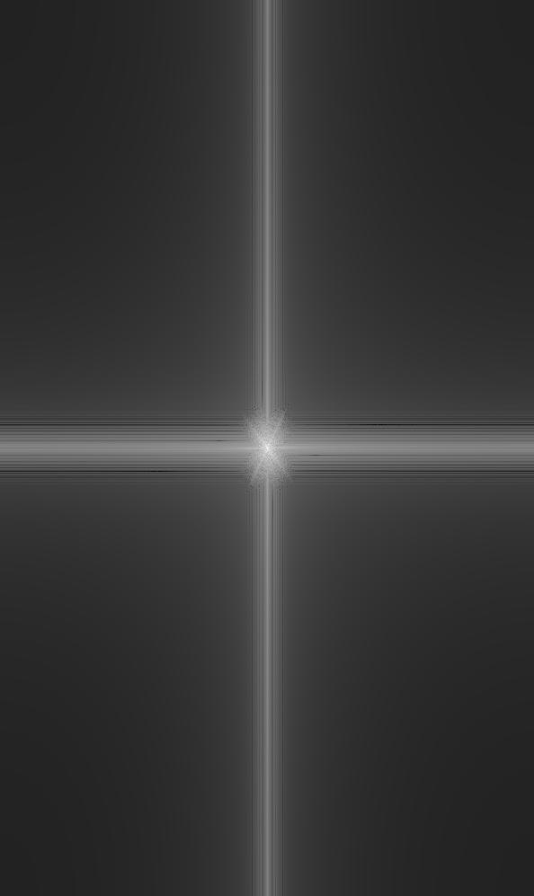
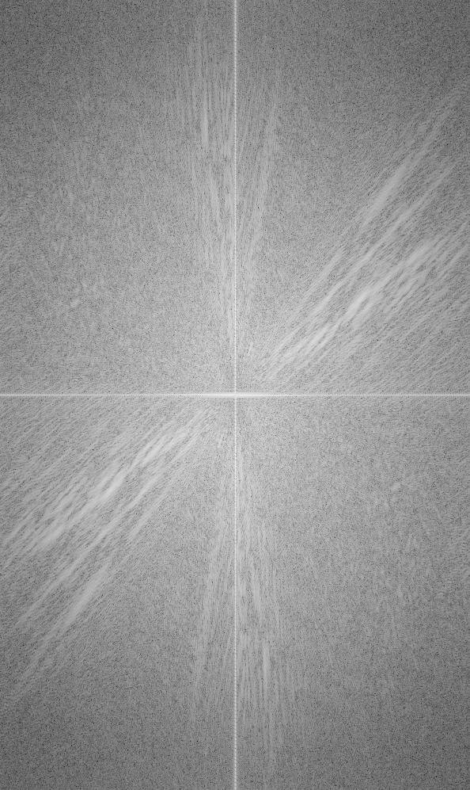
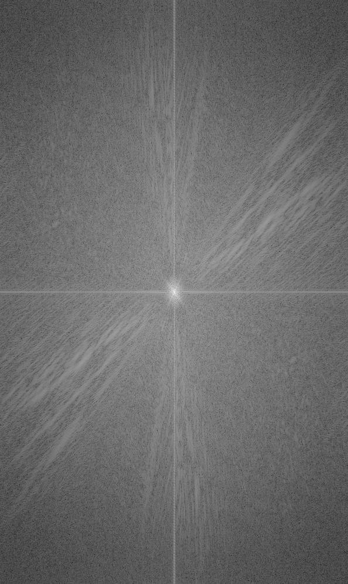
Color
Sunflower + Lion
low-pass (Sunflower) 15 high-pass (Lion) 5
Process
Sunflower (aligned)
Lion (aligned)
Low-pass (Sunflower)
High-pass (Lion)
Hybrid
Image
log |FFT|
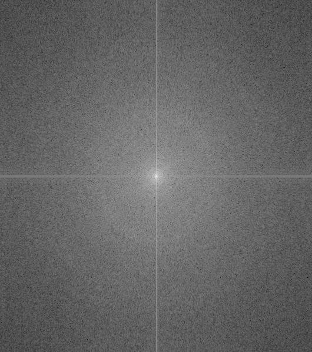
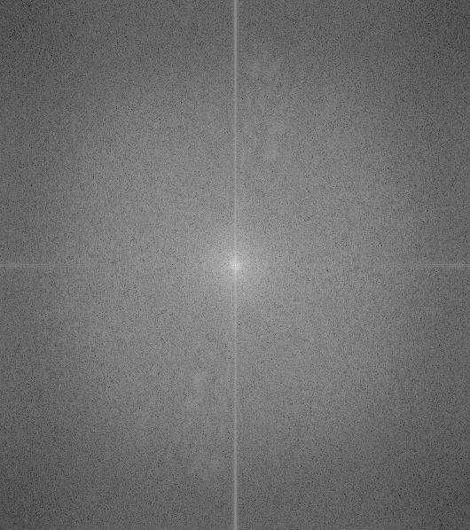
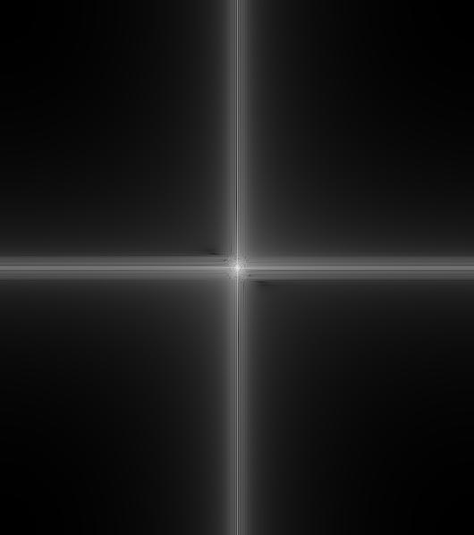
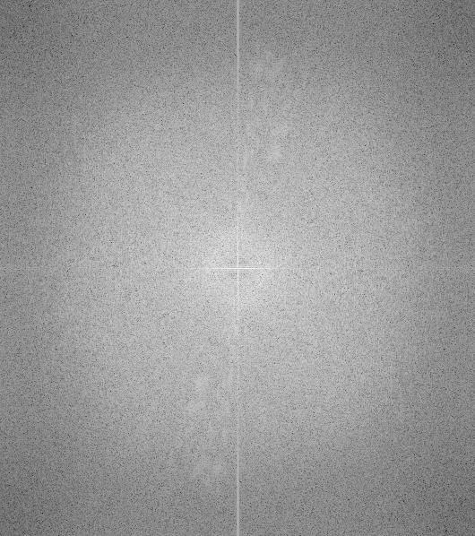
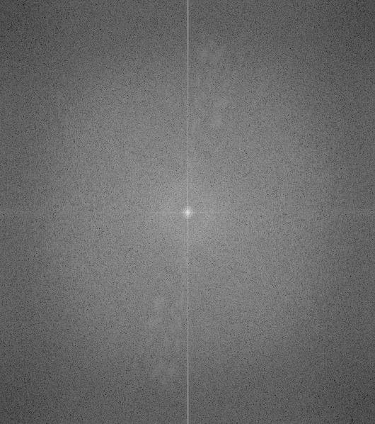
Color
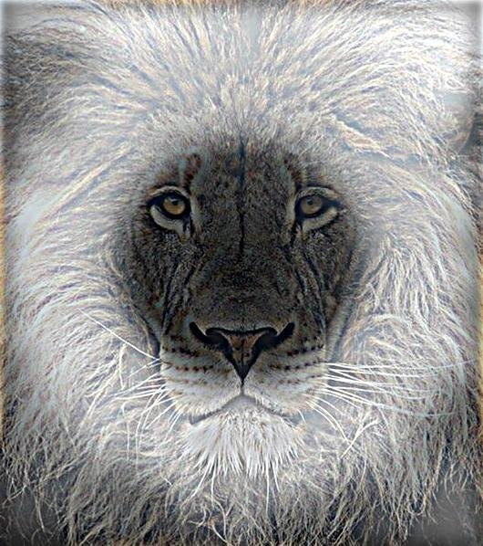
Day + Night
low-pass (Day) 20 high-pass (Night) 6
Process
Image
log |FFT|
Day (aligned)
Night (aligned)
Low-pass (Day)
High-pass (Night)
Hybrid
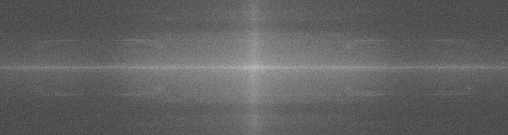
Color
Part 2.3 + 2.4: Gaussian and Laplacian Stacks + Multiresolution Blending
This section explores how to elegantly blend two images based on a mask without jarring transitions. First, we make a Gaussian stack for each image, progressively blurring it more and more while preserving its size. Then we construct a Laplacian stack, where , which captures the band of frequencies between consecutive Gaussian levels. holds the highest frequencies, and the last Laplacian level holds the lowest (it is simply set to the last Gaussian level). The Laplacian stack is a lossless decomposition of the image into frequency bands, as can be seen from the fact that adding up the stack recovers the original image. We also construct a Gaussian stack of the mask we want to use. Then we step through the two images’ Laplacian stacks and the mask’s Gaussian stack level by level, forming triplets. At each level, we apply the mask to blend the two bands, , and then we sum the blended levels back together to create the final image.
Used 6 levels for all images
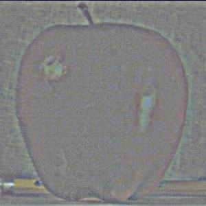
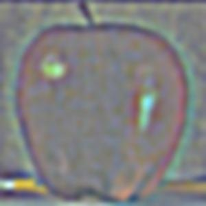
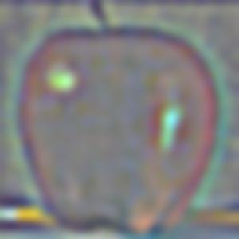
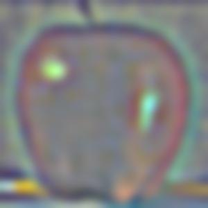

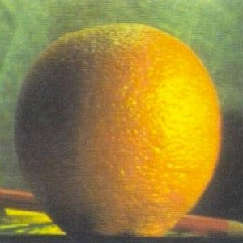

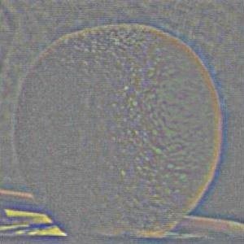
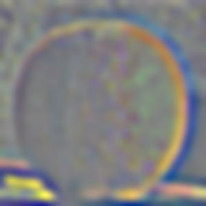
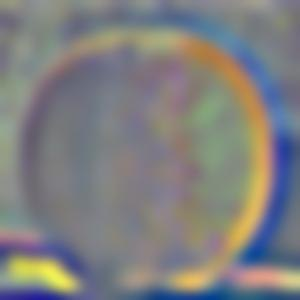
For each level
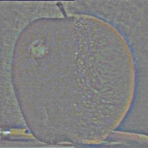
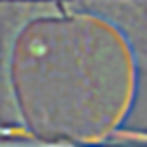
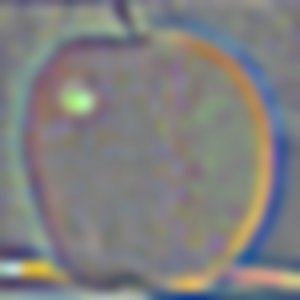
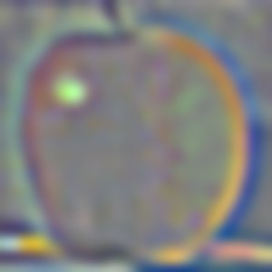
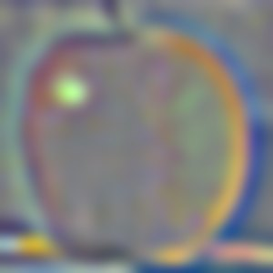
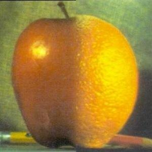
Each sheet in a stack is a full three-channel (RGB) image.
Level 0
Level 1
Level 2
Level 3
Level 4
Level 5
Apple Gaussian
Apple Laplacian
Orange Gaussian
Orange Laplacian
Figure 3.42 (Oraple)
Apple (masked)
Orange (masked)
Blended
Level 0
Level 2
Level 4
Sum
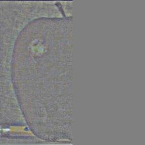
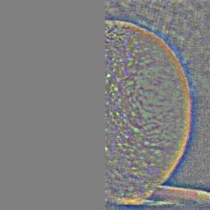
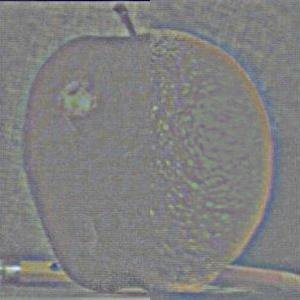
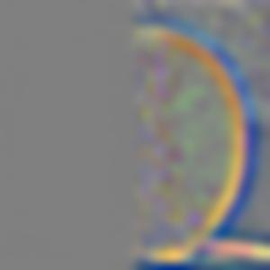
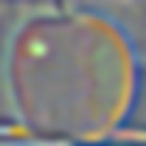
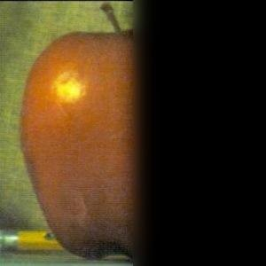
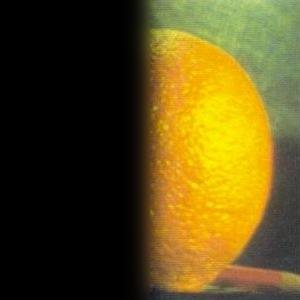
The oraple
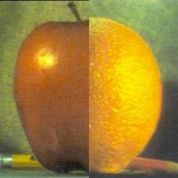
Sunflower + Lion

Figure 10 (Sunflower + Lion)
Lion (masked)
Sunflower (masked)
Blended
Level 0
Level 2
Level 4
Sum
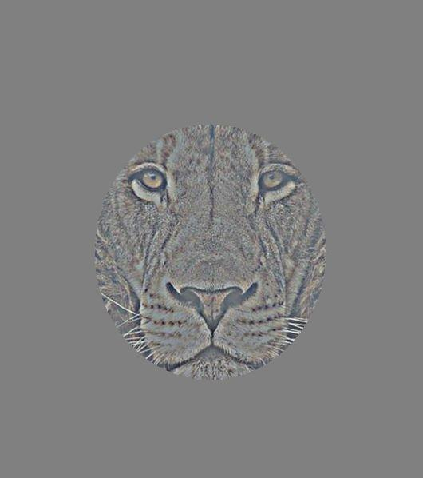
Tiger + Cat
Since I wanted to replace the cat’s fur, I needed a good mask of the cat. I prompted Meta’s SAM 3 to generate masks of the cat’s head and of the whole cat. I then produced the final mask by subtracting the head mask from the cat mask to obtain a mask of the body.

Figure 10 (Tiger + Cat)
Tiger (masked)
Cat (masked)
Blended
Level 0
Level 2
Level 4
Sum
Conclusion
This project was super interesting in terms of fundamentally understanding how frequencies are an extremely important factor to consider when working with images. The first part allowed me to build solid intuitions behind convolution and apply it to the task of edge detection. It was also informative to see that removing noise from an image with a low-pass filter can greatly improve edge detection. The second part dove even further into the idea of manipulating different frequency bands to produce interesting-looking images. It’s quite interesting to see how manipulating the expression of different frequencies in images, or combinations of images, can produce better-quality images than just taking naive approaches. The most important thing I learned from this project is that working with images in the frequency domain can be quite useful.